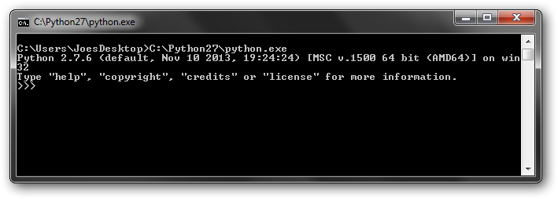
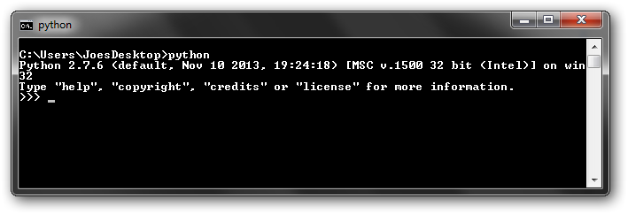

The first part in the Getting Started with Python series, this article is intended to convince you that Python is (probably) the single best programming language for you, let you know which version to pick, and how to get up and running.
As with the other articles in the series, Learning Python and Using an IDE, it is targeted at beginners who want to learn a general purpose programming for personal use and/or to supplement their professional skillsets.
Why Python
Which Version
Installing/Running Python
Python has minimal syntax. It look more like English than any other popular language. Despite its simplicity, a line of Python can be highly efficient, often accomplishing what would take multiple lines in "low(er)-level" languages like Java or C++. These two qualities make it both quick to learn, and quick to code. Quick to code means both that its take less typing to accomplish a task, and that it tends to take much less debugging than programs with stricter rules.
Python is very strong AND is still on the rise. The two most popular languages that closely compare to Python are Perl and Ruby, checkout this google trends comparison of the 3
Python has a huge community and lots of great modules, and it's popularity is not focused on a specific is niche, it has strongholds in web-development, game development, and scientific/engineering community. In the field of Computer Aided Engineering, Python APIs() are nearly ubiquitous. It has great cross-platform capabilities and GUI libraries. There are several very popular libraries written in other language that have great Python "bindings".
The other benefit Python's popularity is the sheer amount of material available on line. One invaluable resource is stackoverflow (you don't have to actually go there, just google your question, SO posts will typically be the 1st results). Questions are posted and responses are 'voted up'; the top response is often an great example with an in-depth explanation. With 300k+ Python posts, chances are you're quest already has a great answer posted. There is also an abundance of larger tutorials and walkthroughs all over the web for about anything you'll be interested in.
While Python has the clear advantage as a general purpose light/moderate programming language, its not the be-all-end-all of programming.
If you are purely interested in web development, the best starting place is HTML/CSS basics, then JavaScript (not related to Java). There is a very popular server side scripting python module called django, but most beginners probably want to do client side scripting, where JavaScript is the de-facto standard.
For Android development, Java. Google has a very nice Android Studio development package (based on IntelliJ, like PyCharm) to get you started.
Java is the dominate language in a lot professional software development right now, with C++ still being dominant in the scientific/engineering community for heavy computational work. Java and C++ are what am amateur like me would call 'serious' programming languages, compared to Python they will have steeper learning curves, and require more typing to achieve the same results. But a 1000 lines of code runs and in microseconds instead of milliseconds, and all that extra code and syntax, a.k.a. verbosity, allows complex programs to be more robust, so they are better suited for large software development. Unless your goals are to get a software development postion (sans degree) the advantages will likely be lost on the "light" software deveoper.
Speaking of degrees, my alma mater now teaches Python as a introductory language, because Python can supports the advanced constructs found in Java C++, yet is easier to learn, it is a very effienct way to teach programming concepts. Students later transition to other languages with very brief or no in-class ramp up time.
2.7
Python 3 is on a separate development track than 2, e.g. Python 2.7 is newer than 3.1. 2.7 is on long-term support and won't be superseded by another Python 2 version.
Form what I read, Python 3 is a robust, capable, improved language. Python 2.7 is no longer being actively improved (thought many 3rd party 2.7 libraries are) but it still has significant advantages advantage in terms of maturity and popularity, and it look like it'll be that way for awhile.
2.7 has been around long enough to have largely replace 2.6 and lower, though versions as low 2.4 are not dramatically different than 2.7, so if your need to switch over for a specific reason your 2.7 knowledge will be largely transferable.
Minor releases, e.g. 2.7.6 are patch releases. Unless you have a specific reason, get the latest, 2.7.6 at time of writing.
Python installation is pretty straightforward. For Windows, just go to the download page
and install the proper executable. On Linux you will already have python. At this point
you can head over to Learning Python or Setting up an
IDE
But there are a common question that come up, you can check these out as they pertain to
you
- Multiple Python Installations
- Running Python
- The 'python' command
- Does not create 'python' command
- Manual Setup
- By default, creates/updates file extension associations
- Option can be deselected
- User can pick installation directory
- Default is C:/python## for Python #.#.x
- Linux should already have a version on Python, version will vary depending on
distribution
- Does creates/overwrite 'python' command
- Also creates/overwrite 'python#' and 'python#.#' version specific commands
- Overwriting 'python' command, causing it to refer to a different version, could cause
issues
- Change any of the above with custom build options
- From an IDE (after interpreter configuration)
- By double-clicking .py files in a browser
> File extension association must be setup
> If the script doesn't require arguments
- From the command line, either by:
> explicitly referencing to the python executable
> using the 'python' command (if it is setup)
- In general, anything that can be done from command line
can also be done by:
> shell/batch scripts
> system calls (which most scriptable softwares can generate)
I use Windows terminology but this paragraph also applies Linux. OS specific info in later paragraphs.
Python can always be launched by entering the explicit path into a command prompt
- To launch a comment prompt (Windows): Windows Key + R -> type 'cmd' >
{enter}
- Type the location of python.exe into the terminal, e.g.
C:\Python27\python.exe
- When called without any argument you get the Python terminal

- To run a script, add the script name as the first argument, e.g.
C:\Python27\python.exe hello.py
The script will run then return to the propmt when complete
More common (and convenient) way to simply be able to type 'python' or other 'command'. This works when the python executable, or some type of link to it, is in one of the directories listed in the PATH environment variable.
The most common recommendation is to modify PATH to include the python directory. Since the python.exe is always named the same, this can only work for a single installation, which proably ins't a big deal for most people. You do have to do it manually. A Windows Python installation only 'overwrites' if the same directory is specified, as would be that case if you installed a 2nd 2.7.x installation and used the default.
By default, a windows installation will setup file path association, allowing you to double-click python scripts. This method isn't useful if the script requires arguments.
For multiple installations, you will want make a symlink with unique name somewhere in a
PATH like C:/WINDOWS. To do this open command windows
as an administrator then use mklink with the /h switch
to make a hardlink. Below I make a uniquely named hardlink, 'joes_py27', to my
C:\Python27 python executable.
cd c:/windows mklink /h joes_py27.exe "C:/Python27/python.exe"
On Linux, links are created in a PATH folder automatically during python installation. Linux distros include a python installation, and overwriting the link with one pointing to a different version could cause issues. To prevent this, you should build python using the altinstall command. You can also control the install directory using build options.
1) Download/uncompress the "compressed source tar ball" for the appropriate version from
Python.org
2) CD into the uncompressed directory and build it with the following commands:
make clean ./configure --prefix=/apps/joes_py27 --exec-prefix=/apps/joes_py27 make altinstall preifx=/apps/joes_py27 exec-prefix=/apps/joes_py27
Maybe options aren't needed in both places, but this worked for me on RHEL 6.4.
References/More info:
How
to install locally python on linux home directory?
[Tutor] how to
install python on unix machine if you don't have root
3a) [Optional] If you want a terminal command use the ln command to make a link somewhere in PATH, like
/usr/local/bin
ln /s /apps/joes_py27/bin/python2.7 /usr/local/bin/joes_python
3b) [Optional] Alternatively, you can get similar behaviour behaviour by using an
alias. This shouldn't require
admin rights.